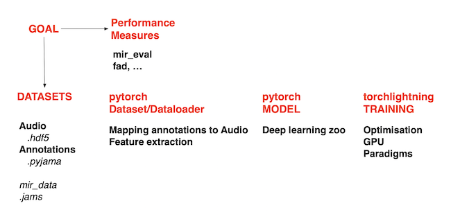
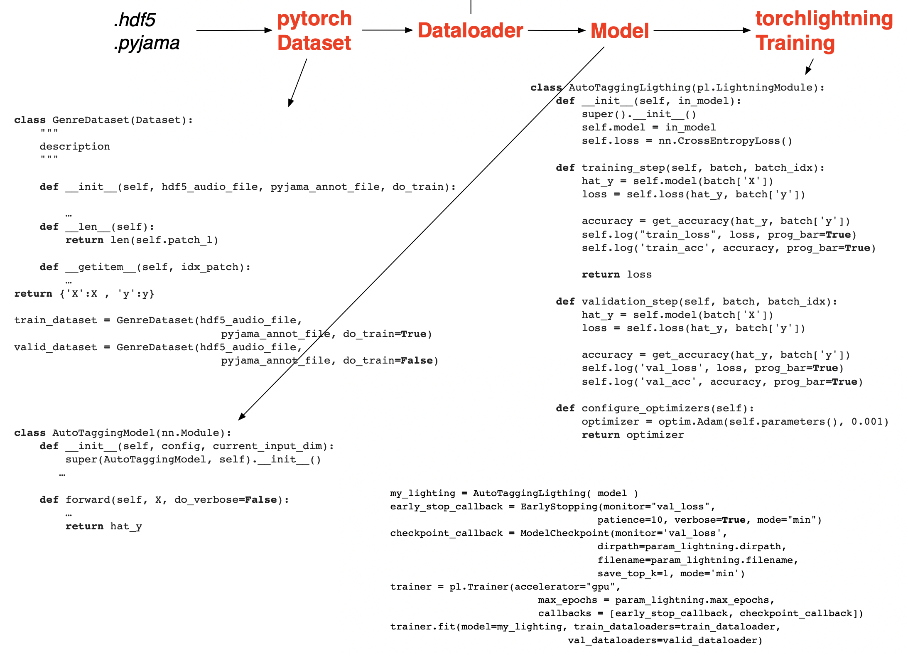

Introduction#
The first part of the book, Tasks describe a subset of typical audio-based MIR tasks. To facilitate the reading of the book, we follow a similar structure to describe each of the audio-based MIR task we consider. We describe in turn:
What is the goal of the task
How it is evaluated
Some popular datasets (used to train system or evaluate the performances of)
How we can solve it using deep learning. This part refers to bricks that are described individually in the second part of the book.
The second pat of the book, Deep Learning Bricks, described each brick individually. We have chosen to separate the description of the bricks from the tasks in which they can be used to emphasise the fact that the same brick can be used for several tasks. We want also to emphasise the fact that those are just bricks.
To make our life easier and facilitate the reading of the code of the notebooks we will rely on the following elements.
for datasets (audio and annotations): .hdf5 (for audio) and .pyjama (for annotations), described below
for deep learning models: pytorch (a python library for deep learning)
for training (optimisation): torchlighning (a library which stands on top of pytorch and which facilitates training and deployment of models)

Solving a task using deep learning#
Using those, dealing with a task mainly involve writing the code for the following elements.
Reading the .hdf5 and .pyjama file of a dataset#
All the audio data of a dataset are stored in a single .hdf5 file.
Each key corresponds to an entry.
An entry corresponds to a specific audiofile.
Its array contains the audio waveform.
Its attribute sr_hz provides the sampling rate of the audio waveform.
with h5py.File(hdf5_audio_file, 'r') as hdf5_fid:
audiofile_l = [key for key in hdf5_fid['/'].keys()]
key = audiofile_l[0]
pp.pprint(f"audio shape: {hdf5_fid[key][:].shape}")
pp.pprint(f"audio sample-rate: {hdf5_fid[key].attrs['sr_hz']}")
All the annotations of a dataset are stored in a single *.pyjama file.
As JAMS files, .pyjama files are JSON files.
However, a single .pyjama file can contain the annotations of ALL entries of a dataset.
Its specifications are described here DOC.
The values of the filepath field of the .pyjama file correspond to the key values of the .hdf5 file.
with open(pyjama_annot_file, encoding = "utf-8") as json_fid:
data_d = json.load(json_fid)
audiofile_l = [entry['filepath'][0]['value'] for entry in entry_l]
entry_l = data_d['collection']['entry']
pp.pprint(entry_l[0:2])
{'collection': {'descriptiondefinition': {'album': ...,
'artist': ...,
'filepath': ...,
'original_url': {...,
'tag': ...,
'title': ...,
'pitchmidi': ...},
'entry': [
{
'album': [{'value': 'J.S. Bach - Cantatas Volume V'}],
'artist': [{'value': 'American Bach Soloists'}],
'filepath': [{'value': '0+++american_bach_soloists-j_s__bach__cantatas_volume_v-01-gleichwie_der_regen_und_schnee_vom_himmel_fallt_bwv_18_i_sinfonia-117-146.mp3'}],
'original_url': [{'value': 'http://he3.magnatune.com/all/01--Gleichwie%20der%20Regen%20und%20Schnee%20vom%20Himmel%20fallt%20BWV%2018_%20I%20Sinfonia--ABS.mp3'}],
'tag': [{'value': 'classical'}, {'value': 'violin'}],
'title': [{'value': 'Gleichwie der Regen und Schnee vom Himmel fallt BWV 18_ I Sinfonia'}],
},
{
'album': [{'value': 'J.S. Bach - Cantatas Volume V'}],
'artist': [{'value': 'American Bach Soloists'}],
'filepath': [{'value': '0+++american_bach_soloists-j_s__bach__cantatas_volume_v-09-weinen_klagen_sorgen_zagen_bwv_12_iv_aria__kreuz_und_krone_sind_verbunden-146-175.mp3'}],
'original_url': [{'value': 'http://he3.magnatune.com/all/09--Weinen%20Klagen%20Sorgen%20Zagen%20BWV%2012_%20IV%20Aria%20-%20Kreuz%20und%20Krone%20sind%20verbunden--ABS.mp3'}],
'tag': [{'value': 'classical'}, {'value': 'violin'}],
'title': [{'value': '-Weinen Klagen Sorgen Zagen BWV 12_ IV Aria - Kreuz und Krone sind verbunden-'}],
'pitchmidi': [
{
'value': 67,
'time': 0.500004,
'duration': 0.26785899999999996
},
{
'value': 71,
'time': 0.500004,
'duration': 0.26785899999999996
}],
}
]},
'schemaversion': 1.31}
Using those, a dataset is described by only two files: a .hdf5 for the audio, a .pyjama for the annotations.
We provide here https://perso.telecom-paristech.fr/gpeeters/tuto_DL101forMIR/ a set of datasets (each with its .hdf5 and .pyjama file).
Pytorch dataset#
Writing pytorch Dataset is probably the most complex part.
For short, it involves defining what should the __getitem__ return (the X and y for the model) and involves providing in the __init__ all the necessary information so that __getitem__ can do its job.
It therefore involves defining what is the input representation of the model (
Xcan be waveform, Log-Mel-Spectrogram, Harmonic-CQT), defining where to computing those (either one-the-fly in the__getitem__, pre-computed those in the__init__and read them on-the-fly from the hard drive in the__getime__, or store those in the memory of the CPU, the GPU).
In the first notebooks, we define a set of features in the feature.py package (feature.f_get_lms, feature.f_get_hcqt). We also define the output of __getitem__/X as a patch (a segment/chunk of a specific duration).
The list of all possible patches for a given audio is given by feature.f_get_patches.
It also involves mapping the annotations contains in the .pyjama file (such as pitch, genre or work-id annotations) to the format of
y(scalar, matrix or one-hot-encoding) and to map it to the time position and extend of the patchesX.

Pytorch model#
Models if pytorch are usually written as class using the nn.Module.
Such a class should have a __init__ method defining the parameters (layers) to be trained and a __forward__ method describing how to do the forward with the layers defined before (for example how to go from X to y).
It is common to specify the hyper-parameters of the model (number of layers, feature-maps, activation) in a dedicated .yaml.
We do a step forward here by defining all the model in a .yaml file.
The model then becomes much more readable.
class NetModel(nn.Module):
"""
Generic class for neural-network models based on the f_parse_component of .yaml file
"""
def __init__(self, config, current_input_dim):
super().__init__()
self.block_l = []
for config_block in config.model.block_l:
sequential_l = []
for config_sequential in config_block.sequential_l:
layer_l = []
for config_layer in config_sequential.layer_l:
module, current_input_dim = f_parse_component(config_layer[0], config_layer[1], current_input_dim)
layer_l.append( module )
sequential_l.append( nn.Sequential (*layer_l) )
self.block_l.append( nn.ModuleList(sequential_l) )
self.model = nn.ModuleList(self.block_l)
def forward(self, X, do_verbose=False):
store_d = {}
for idx_block, block in enumerate(self.model):
for idx_sequential, sequential in enumerate(block):
if isinstance(sequential[0], nnStoreAs): store_d[sequential[0].key] = X
elif isinstance(sequential[0], nnCatWith): X = torch.cat( ( X, store_d[sequential[0].key]), dim=1)
else: X = sequential( X )
return X
with the corresponding configuration .yaml file.
model:
name: AutoTagging
block_l:
- sequential_l:
- layer_l:
- [LayerNorm, {'normalized_shape': [128, 64]}]
- [Conv2d, {'in_channels': 1, 'out_channels': 80, 'kernel_size': [128, 5], 'stride': [1,1]}]
- [Squeeze, {'dim': 2}]
- layer_l:
- [LayerNorm, {'normalized_shape': -1}]
- [Activation, LeakyReLU]
- [Dropout, {'p': 0}]
- layer_l:
- [Conv1d, {'in_channels': -1, 'out_channels': 60, 'kernel_size': 5, 'stride': 1}]
- [MaxPool1d, {'kernel_size': 3, 'stride': 3}]
- [LayerNorm, {'normalized_shape': -1}]
- [Activation, LeakyReLU]
- [Dropout, {'p': 0}]
- layer_l:
- ['Permute', {'shape': [0, 2, 1]}]
- sequential_l:
- layer_l:
- [LayerNorm, {'normalized_shape': -1}]
- [Linear, {'in_features': -1, 'out_features': 128}]
- [BatchNorm1dT, {'num_features': -1}]
- [Activation, LeakyReLU]
- [Dropout, {'p': 0}]
- layer_l:
- [Linear, {'in_features': -1, 'out_features': 128}]
- [BatchNorm1dT, {'num_features': -1}]
- [Activation, LeakyReLU]
- [Dropout, {'p': 0}]
- layer_l:
- ['Permute', {'shape':[0, 2, 1]}]
- layer_l:
- [Mean, {'dim': 2}]
- sequential_l:
- layer_l:
- [Linear, {'in_features': -1, 'out_features': 50}]
- [Activation, Softmax]
TorchLightning model#
TorchLightning allows to uniformized the way the code is written and to by-pass the tedious work of writting training and validation loop over epoch and over mini-batch.
The writing of the Lightning class is very standard and almost the same for all tasks. It involves indicating which model is used, what is a forward pass for training and validation and which optimizer to be used.
class AutoTaggingLigthing(pl.LightningModule):
def __init__(self, in_model):
super().__init__()
self.model = in_model
def training_step(self, batch, batch_idx):
hat_y = self.model(batch['X'])
loss = self.loss(hat_y, batch['y'])
self.log("train_loss", loss, prog_bar=True)
return loss
def validation_step(self, batch, batch_idx):
hat_y = self.model(batch['X'])
loss = self.loss(hat_y, batch['y'])
self.log('val_loss', loss, prog_bar=True)
def configure_optimizers(self):
optimizer = optim.Adam(self.parameters(), 0.001)
return optimizer
The training code by itself is very simple and allows to define CallBack using predefined methods such as for EarlyStopping or for saving ModelCheckpoint.
my_lighting = AutoTaggingLigthing( model )
early_stop_callback = EarlyStopping(monitor="val_loss", patience=10, verbose=True, mode="min")
checkpoint_callback = ModelCheckpoint(monitor='val_loss', dirpath=param_lightning.dirpath, filename=param_lightning.filename, save_top_k=1, mode='min')
trainer = pl.Trainer(accelerator="gpu", max_epochs = param_lightning.max_epochs, callbacks = [early_stop_callback, checkpoint_callback])
trainer.fit(model=my_lighting, train_dataloaders=train_dataloader, val_dataloaders=valid_dataloader)
Evaluation metrics#
In the notebooks, we will rely most of the time on
mir_evalwhich provides most MIR specific evaluation metrics,scikit-learnwhich provides the standard machine-learning evaluation metrics.